The tea leaves are oblong or oval, with blunt or pointed apex, cuneate base, shiny upper surface, glabrous or pilose at the beginning, serrated edges, and glabrous petioles. flower
Tea is a drink made from the young leaves or buds on the new shoots of tea trees. my country has a long history of drinking tea.
Generally, according to the different production processes, it can be divided into six categories: green tea, black tea, green tea, dark tea, yellow tea, and white tea.
| 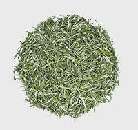 | 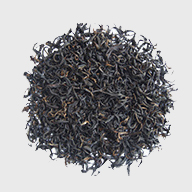 | 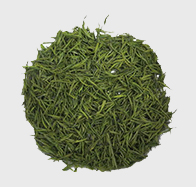 | 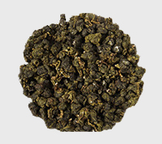 |
|
Chinese green tea
|
Chinese black tea
|
Angie White Tea
|
Chinese Oolong Tea
|
| details | details | details | details |
[tea fragrance]
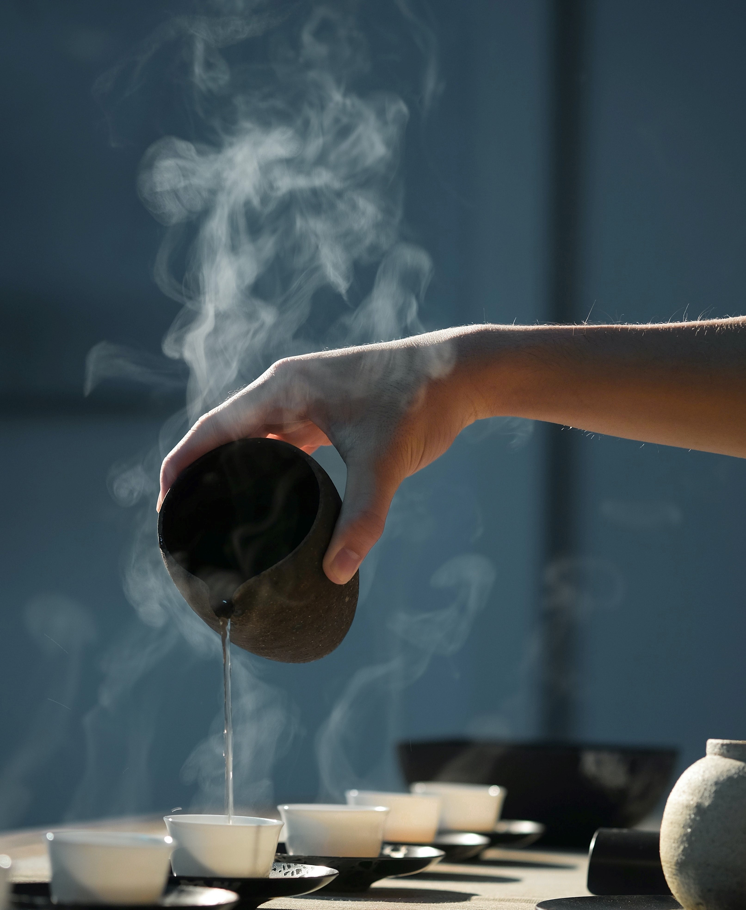 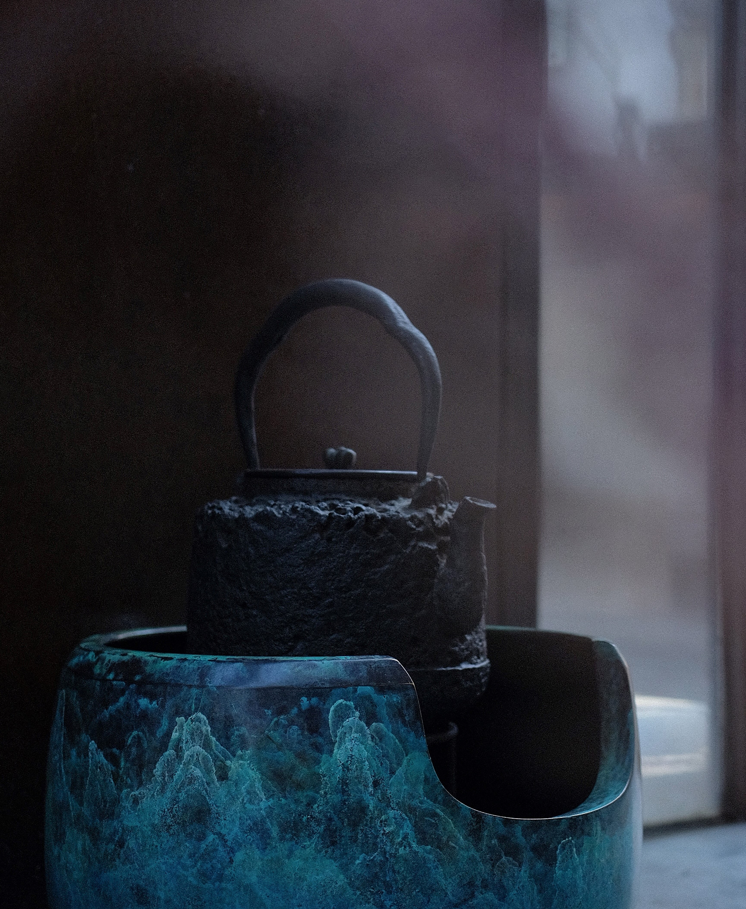 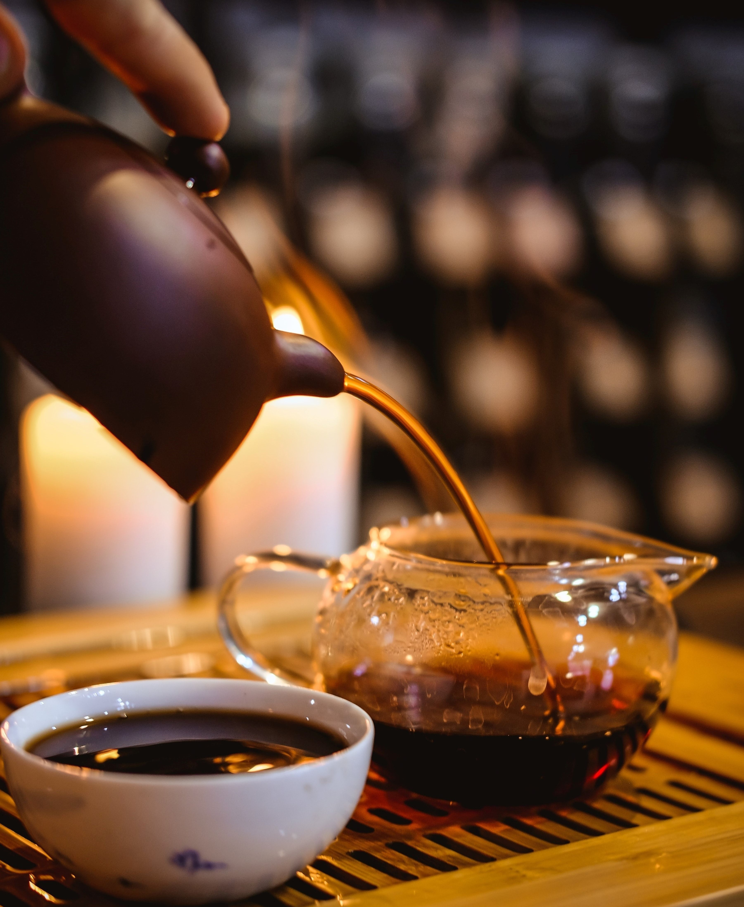 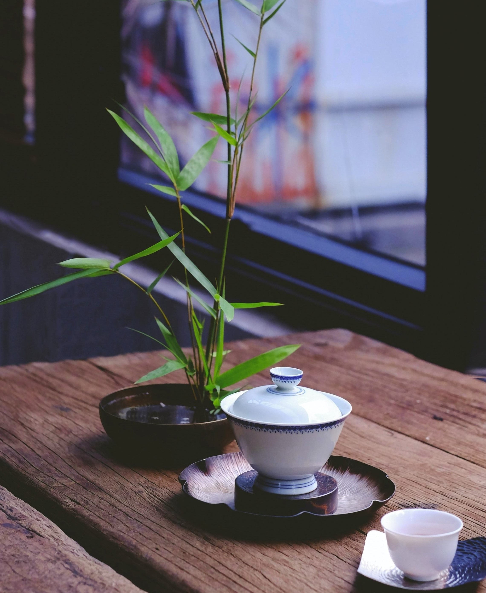
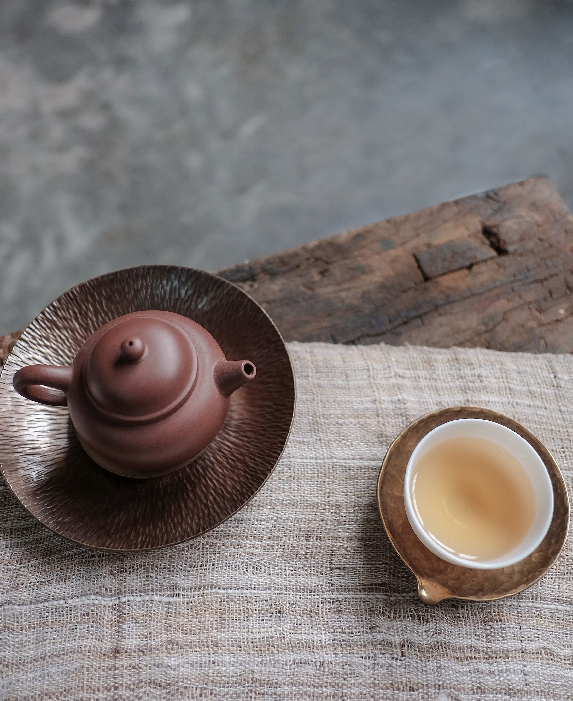
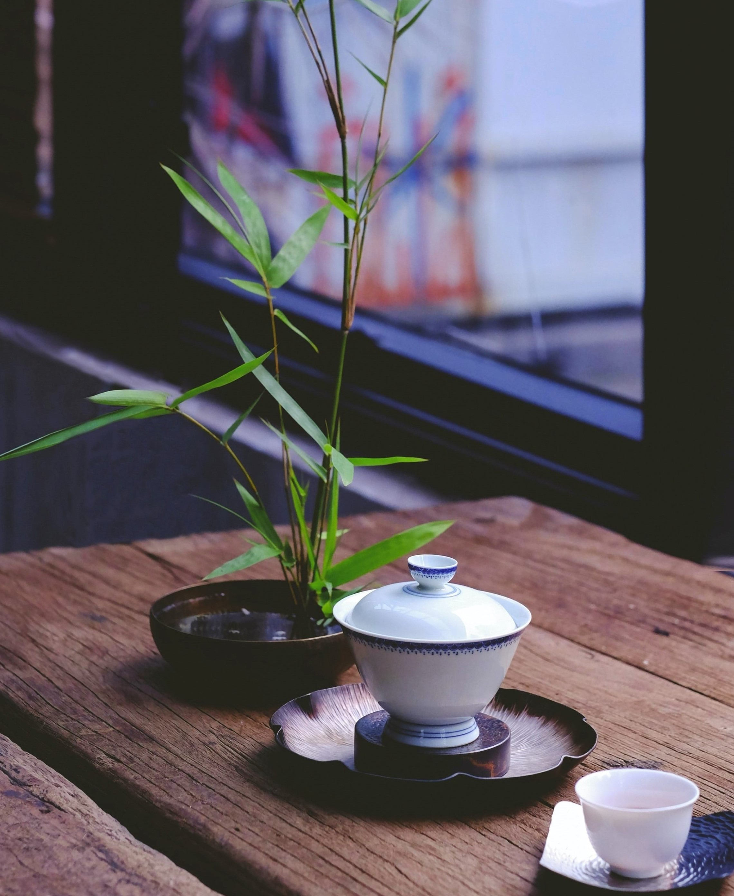
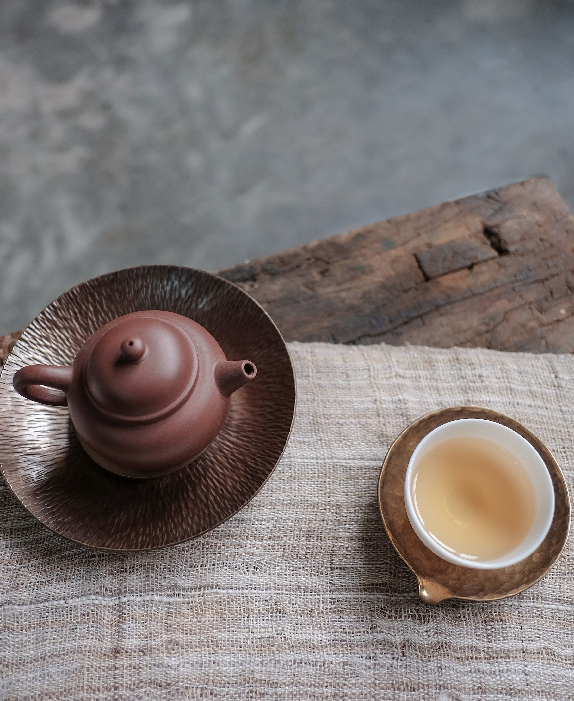
绕瓯翻雪不须疑，
到齿馀香亦解肥。
鼻观舌根留不得，
夜深还与梦魂飞。